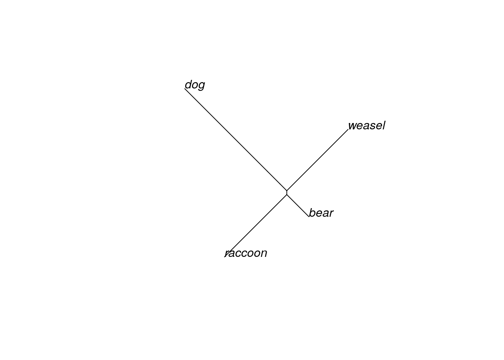
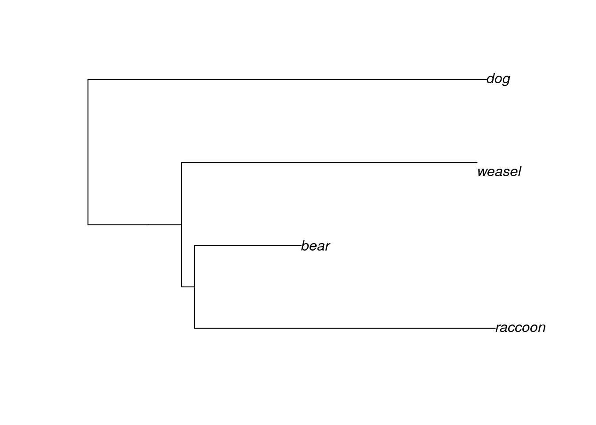
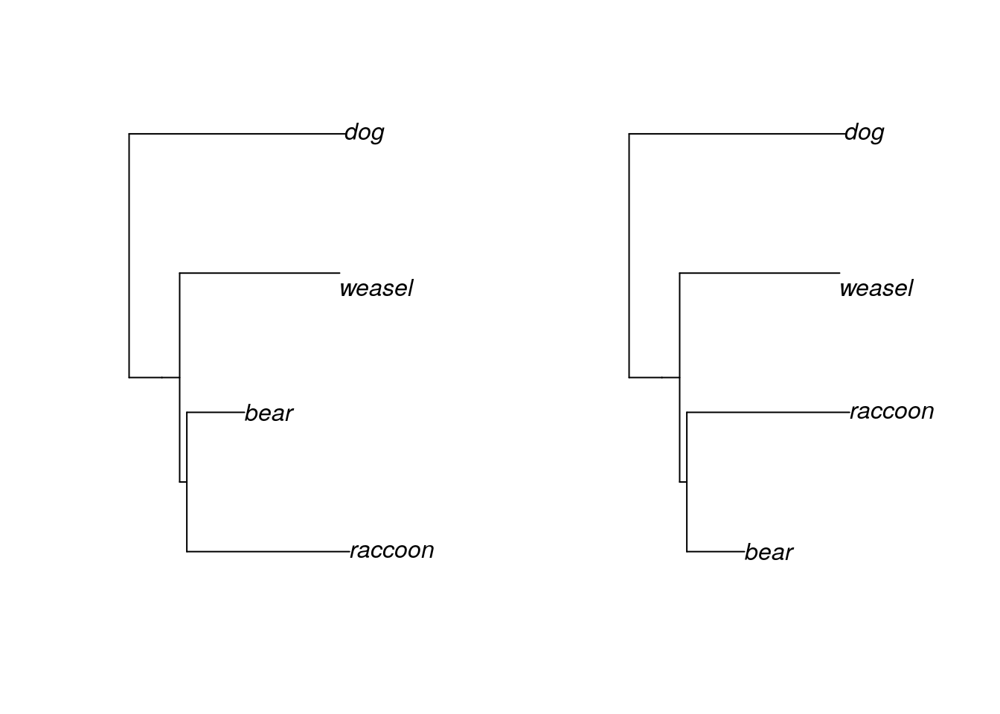
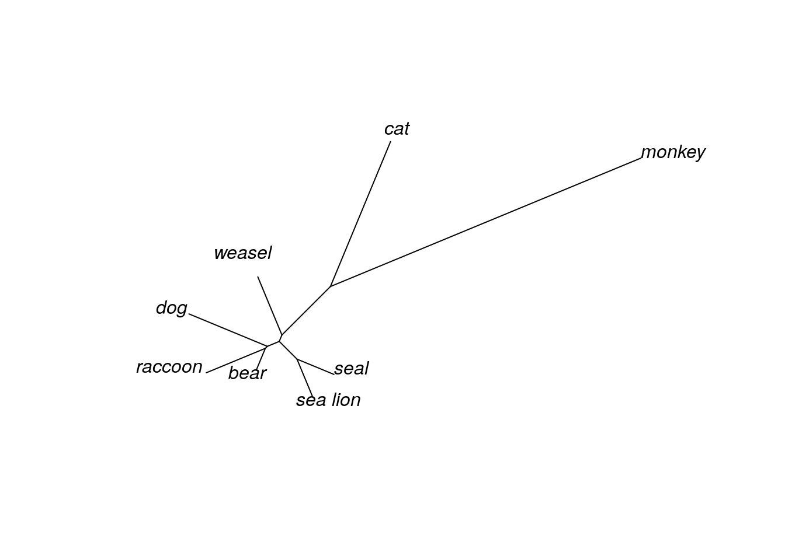
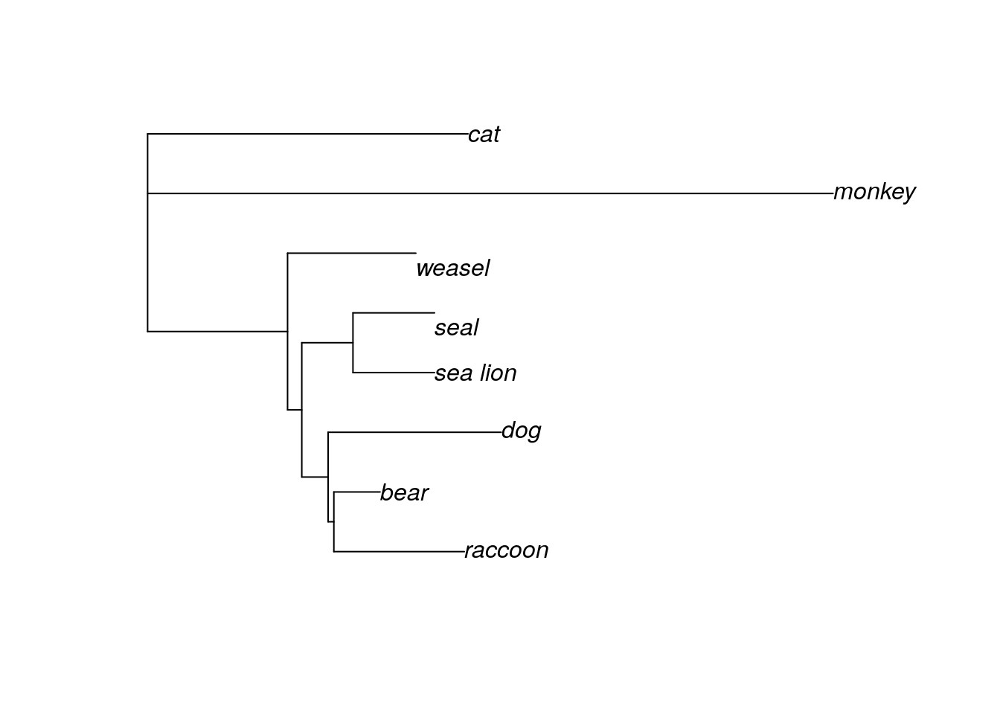
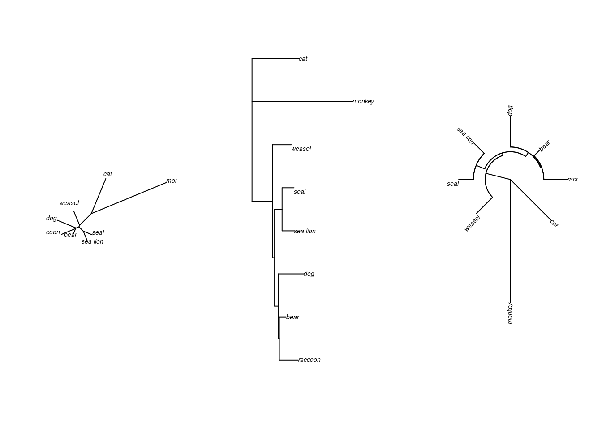
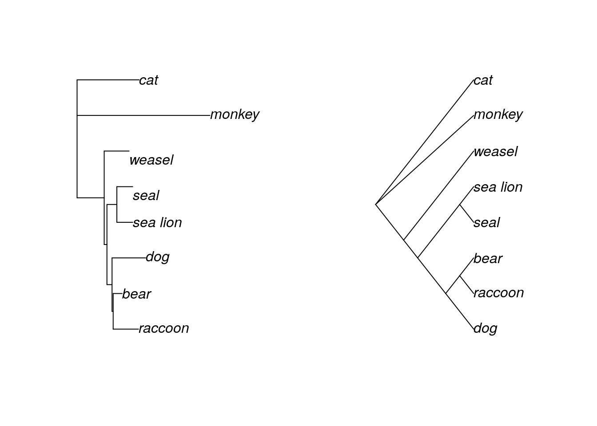

Chapter 6 Visualizing trees in R
6.1 Creating a Newick object
Computer programs use the Newick tree format for phylogenetic trees. This format uses a series of parentheses, commas, and colons to store information about evolutionary relationships.
- (A,B) indicates a pair of taxa that form their own group, or clade
- ((A,B),C) indicates the next most closely related taxon to the A-B clade is taxon C
- (A:5,B:7) tells the program (and us!) the length of the branch connecting each taxon to the node. In this case, the branch length between the node and A is 5 and the branch length for B is 7. The total distance between A and B is 5+7, or 12.
- ((A,B),C)); tells the program the tree is complete. If the semicolon is missing at the end, the program will keep looking for information on another taxon.
For this exercise, we are going to create an R object in Newick formula that illustrates the relationships among several species of mammals.
#install.packages('ape') #this installs the ape package
#install.packages('nlme') #this installs the nlme package
library(ape) #this opens the ape package
library(nlme) #this opens the nlme package
#we first create an object that stores the tree information
mammal.1 <- read.tree(text = "((((raccoon:19.19959,bear:6.80041):0.84600,
weasel:18.87953):2.09460):3.87382,dog:25.46154);")
#typing the name of the object means R will tell us about it
mammal.1##
## Phylogenetic tree with 4 tips and 4 internal nodes.
##
## Tip labels:
## raccoon, bear,
## weasel, dog
##
## Rooted; includes branch lengths.We now have a phylogenetic tree loaded into R.
Why is it called Newick format?
This is what Joe Felsenstein, one of the giants of the phylogenetic field, says: “The Newick Standard was adopted 26 June 1986 by an informal committee meeting convened by me during the Society for the Study of Evolution meetings in Durham, New Hampshire and consisting of James Archie, William H.E. Day, Wayne Maddison, Christopher Meacham, F. James Rohlf, David Swofford, and myself. (The committee was not an activity of the SSE nor endorsed by it). The reason for the name is that the second and final session of the committee met at Newick’s restaurant in Dover, New Hampshire, and we enjoyed the meal of lobsters. The tree representation was a generalization of one developed by Christopher Meacham in 1984 for the tree plotting programs that he wrote for the PHYLIP package while visiting Seattle. His visit was a sabbatical leave from the University of Georgia, which thus indirectly partly funded that work.”
6.2 Drawing trees
It is quite difficult for humans to quickly interpret the relationships and branch lengths in the Newick format. Luckily, R (and other phylogenetics programs) can convert Newick formats into a more understandable form.
#plot is the command we use to create trees with the ape package
#one of the options is the type of tree the command draws
#this can also be written as plot(mammal.1, "u")
plot(mammal.1, type="unrooted")
You’ve inferred an unrooted tree. It probably looks a bit different than trees you’ve seen before (including the one in the previous section); most trees are displayed in a rooted form. We can do that by specifying that we want to draw a phylogram. If you don’t declare an outgroup first, R will choose to root the phylogram halfway between the two longest branches (this is called midpoint rooting).
#here we draw a phylogram
#alternatively, you can use the command:
#plot(plot(mammal.1), as phylogram is the default type
plot(mammal.1, type="phylogram")
Now the tree looks more like the Ursidae tree we examined earlier. The order of the tips is partly determined by the order in which we wrote the taxa in our Newick format. We can change the order of the tips and still have the same tree.
mammal.2 <- read.tree(text = "((((bear:6.80041,raccoon:19.19959):0.84600,
weasel:18.87953):2.09460):3.87382,dog:25.46154);")
#this bit of code here tells R to put the trees in side-by-side in
#a single row (1 row, 2 columns)
par(mfrow=c(1,2))
plot(mammal.1)
plot(mammal.2)
Clades can rotate freely around nodes without changing the relationships among the tips. Although the “weasel” label is closer to “bear” in our first tree than it is in the second tree, the evolutionary distance between the two is the same in both trees, because we trace through the same nodes to find their common ancestor. Both of these trees are exactly the same, in a phylogenetic sense.
6.3 Adding outgroups
Let’s add some more taxa to our tree!
mammal.3 <- read.tree(text = "((raccoon:19.19959,bear:6.80041):0.84600,((sea_lion:11.99700,
seal:12.00300):7.52973,((monkey:100.85930,cat:47.14069):20.59201,
weasel:18.87953):2.09460):3.87382,dog:25.46154);")
mammal.3##
## Phylogenetic tree with 8 tips and 6 internal nodes.
##
## Tip labels:
## raccoon, bear, sea_lion,
## seal, monkey, cat, ...
##
## Unrooted; includes branch lengths.We’ve now added an additional 5 taxa to our tree of mammalian species. Let’s first take a look at the unrooted tree.
plot(mammal.3, type="u")#"u" is short for "unrooted"
Even with the unrooted tree, we can see that some species are definitely more closely related than others. In fact, it looks like both “cat” and “monkey” are pretty distantly related to the others, since the branches connecting these taxa are much longer than any other branch. Given this information, we will define these two taxa as our outgroup and redraw our tree, this time as a rooted phylogram.
#this command tells R that monkey and cat are outgroups
mammal.3.root <- root(mammal.3, outgroup = c('monkey','cat'))
plot(mammal.3.root, type="p")#"p" is short for "phylogram"
6.4 Drawing trees multiple ways
So far you’ve drawn trees in two ways - unrooted, and as a phylogram. For both of these tree types, the branch lengths are scaled to indicate evolutionary distance (or how many changes have occurred). As a result, the tips aren’t all even with each other.
There are two other common ways of drawing trees. The radial tree (sometimes called the fan tree) arranges all the branches in a circle. This is a popular way to draw a phylogeny with many tips that would otherwise take up a lot of space.
#now we're looking at three different trees next to each other
#basically, figures are in 1 row and 3 columns
par(mfrow=c(1,3))
plot(mammal.3, type="u")
plot(mammal.3.root, type="p")
plot(mammal.3.root, type="f")#f is short for "fan"
All three of these trees show exactly the same information.
The last common way to draw trees is as a cladogram. Cladograms are a little different than the others, because the branches are not scaled to evolutionary distance. Instead, the tree is drawn so that all the tips (taxa) are lined up. It is often easier to see relationships in a cladogram, particularly if the internode distances (the distance between two internal nodes of a tree) are small.
To properly draw a cladogram, we will rewrite our tree in Newick formula so that it doesn’t include branch lengths.
mammal.4 <- read.tree(text = "(dog,(raccoon,bear),((seal,sea_lion),
((monkey,cat), weasel)));")
mammal.4.root <- root(mammal.4, outgroup = c('monkey','cat'))
par(mfrow=c(1,2))
plot(mammal.3.root, type="p")
plot(mammal.4.root, type="c")#c is short for "cladogram"
QUESTIONS
What is the total branch length between “bear” and “raccoon”? (You will need to look at the tree in Newick format.)
Does “weasel” share a more common recent ancestor with “seal” or with “sea lion”?
Why does it look like “weasel” is more closely related to “bear” in the tree with four taxa, but it looks like “dog” is more closely related to “bear” in the tree with eight taxa? (HINT: Think about the purpose of an outgroup, and whether we specified one for the four-taxa tree.)
6.5 The phylo class
When we use the ape package, R converts a tree in Newick format to an object of the phylo class. This is basically a list of four dataframes.
str(mammal.3.root)## List of 4
## $ edge : int [1:13, 1:2] 9 14 12 10 11 11 10 12 13 13 ...
## $ edge.length: num [1:13] 20.592 2.095 3.874 0.846 19.2 ...
## $ Nnode : int 6
## $ tip.label : chr [1:8] "raccoon" "bear" "sea_lion" "\nseal" ...
## - attr(*, "class")= chr "phylo"
## - attr(*, "order")= chr "cladewise"Each dataframe holds information about some part of the tree.
edge: the number of steps needed to connect two tips. It’s easiest to think of each branch as an edge.
edge.length: the length of each corresponding edge, or branch
Nnode: the number of nodes in the tree
tip.label: the tip names (the taxa)
sessionInfo()## R version 4.0.2 (2020-06-22)
## Platform: x86_64-pc-linux-gnu (64-bit)
## Running under: Ubuntu 20.04.3 LTS
##
## Matrix products: default
## BLAS/LAPACK: /usr/lib/x86_64-linux-gnu/openblas-pthread/libopenblasp-r0.3.8.so
##
## locale:
## [1] LC_CTYPE=en_US.UTF-8 LC_NUMERIC=C
## [3] LC_TIME=en_US.UTF-8 LC_COLLATE=en_US.UTF-8
## [5] LC_MONETARY=en_US.UTF-8 LC_MESSAGES=C
## [7] LC_PAPER=en_US.UTF-8 LC_NAME=C
## [9] LC_ADDRESS=C LC_TELEPHONE=C
## [11] LC_MEASUREMENT=en_US.UTF-8 LC_IDENTIFICATION=C
##
## attached base packages:
## [1] stats graphics grDevices utils datasets methods base
##
## other attached packages:
## [1] nlme_3.1-149 ape_5.4-1
##
## loaded via a namespace (and not attached):
## [1] Rcpp_1.0.8 knitr_1.33 magrittr_2.0.2 hms_0.5.3
## [5] lattice_0.20-41 R6_2.4.1 rlang_0.4.10 highr_0.8
## [9] stringr_1.4.0 tools_4.0.2 parallel_4.0.2 grid_4.0.2
## [13] xfun_0.26 jquerylib_0.1.4 htmltools_0.5.0 ellipsis_0.3.1
## [17] ottrpal_0.1.2 yaml_2.2.1 digest_0.6.25 tibble_3.0.3
## [21] lifecycle_1.0.0 crayon_1.3.4 bookdown_0.24 readr_1.4.0
## [25] vctrs_0.3.4 fs_1.5.0 evaluate_0.14 rmarkdown_2.10
## [29] stringi_1.5.3 compiler_4.0.2 pillar_1.4.6 pkgconfig_2.0.3